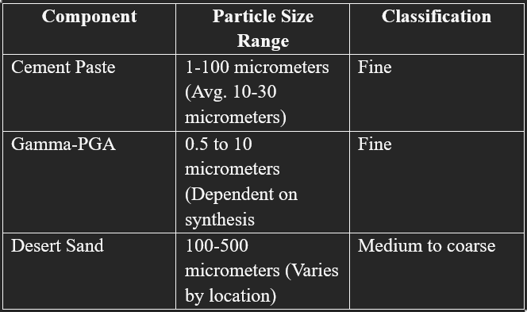

Part A: The Science Side
Introduction
The main Synthetic Biology aspect of our research is to produce γ-PGA using microbes. For which we pick bacteria, that of the Bacillus sp. There have been numerous studies conducted across various parts of the globe to produce γ-PGA exploiting multiple ways of Genetic Engineering and Recombinant DNA Technology.
Bacillus licheniformis and Bacillus subtilis natto are the most widely used ones due to their higher yields followed by Bacillus amyloliquefaciens and Bacillus anthracis.
Ivanovics and colleagues found γ-PGA as a capsule component of Bacillus anthracis that is released into the media after autoclaving or cell aging and autolysis. FTIR (Fourier Transfer Infra-Red Spectroscopy) can identify the structural properties of PGA or its salt form [1]
- PGA may take on five various conformations according to environmental conditions [1]:
- Alpha helix
- Beta-sheet
- Helix to random coil transition
- Random coil
- enveloping aggregation
- γ-PGA is biodegradable, edible, non-toxic to humans and the environment, with a high molecular weight. It serves as a thickening, humectant, bitterness revealer, biopolymer flocculant, heavy metal absorber, cryoprotectant, and sustained release substance or drug carrier with great biodegradability in the fields of food, cosmetics, or medicine [1].
Bacillus licheniformis and Bacillus subtilis natto [1]
Based on the paper we looked into, γ-PGA is a promising biodegradable material for commercial and medical applications, but its yield in production needs to be improved. Research has indicated that Bacillus licheniformis can produce γ-PGA in Medium E, with MnSO₄ greatly enhancing the yield (12 g/L with 2.46 mM MnSO₄ vs. 4–5 g/L without).
However, Bacillus subtilis natto could not produce γ-PGA in the same medium. Among the several media tested (C, F, GS), Medium GS gave the maximum production of γ-PGA of 26–28 g/L with a molecular weight of 627,000.
The most recent research aims at the γ-PGA production by mixed culture of B. subtilis and B. licheniformis considering the possibility of synergistic interactions.
Use of Quorom Sensing (QS) [2]
- Researchers created a PhrQ-RapQ-DegU quorum sensing (QS) system to dynamically control the production of γ-polyglutamic acid (γ-PGA) in Bacillus subtilis 168. Traditional methods are not feasible because γ-PGA is highly viscous, thereby inhibiting cell growth, but QS-based regulation allows fine-tuning of gene expression without expensive inducers.
- Key steps in the study:
- DegU-based regulation: Developed a promoter library, screened suitable promoters, and mutated degU for optimization.
- Nucleation QS system implementation. PhrQ-RapQ-DegU was integrated to balance dynamic cell growth and γ-PGA synthesis. In the 3 L bioreactor, this dynamic method showed a 6.53-fold increase in γ-PGA yield; however, the system allows for a scalable strategy applied to any possible microorganism to optimize gene expression through the enhancement of various metabolites produced.
Energy Absorption
- When stress is applied to the composite material:
- The viscoelastic nature of γ-PGA allows it to deform and absorb some of the energy.
- This deformation helps to distribute the stress more evenly throughout the material.
- This energy absorption prevents the formation of large cracks and delays the onset of failure.
- Hence, γ-PGA will help the sand grains bind together.
Part B: The Civil Side
Particle Packing and how it applies to desert sand
Concrete is essentially a mixture of various components, and its effectiveness and overall characteristics are determined by the components' behaviour in the fresh and hard state, which directly refers to also the type and degree of packing of concrete's constituents
Usual Cement mixtures are in the following ratio: one part cement, two parts sand, and four parts aggregate. These ratios can be selected arbitrarily, and water can be added to meet the tasks needed. However, much of this ratio can also be dealt with by defining the packing power of each component in the concrete mixture.
To carry forward, we will be considering the following as components of our concrete
PGA may take on five various conformations according to environmental conditions [1]:
• Cement Paste
• Gamma PGA
• Water (to evict porosity)
• Desert sand
This review's final goal is to ensure that if and when all the above components are combined, the result will be a sustainable and durable form of concrete. We also need to ensure that the final cement product has a smaller particle size, is good quality cement, and has a low water-to-cement ratio - which in turn causes the final product to have high tensile strength.
From the paper, given that we have five different components to account for, we will be going with the discrete method, within which we will be following the multimodal approach. This is vastly different from the continuous method used generally. This method has been selected because;
a) Our particles are different, and a multimodal approach will help us account for all their particle sizes.
b) A continuous approach will not account for the excess material like fly ash that is added to increase the strength of the material.
Given that we are using a discrete model, the following will be the formula that will be applied:
Fig.1: Binary Mixture mathematical model [4]
 Fig.2: The above are the PCDs of the constituent material
Through further computation, we can determine the other parameters associated with the same.
Ratio of Components to form the Concrete [5]
Our current issue is the apparent lack of material on the amount of Gamma PGA required for the final product.
The above paper illustrates the use of gamma PGA in making cement. However, it is to be noted that this is a biomedical application, and the cement being made has not been experimented with for construction.
However, the compressive strength mentioned in the paper is 130 MPa (almost that of UHPC, which is ultra-high-performance concrete), far exceeding standard concrete's compressive strength of 50-100 MPa. Given this, the paper was used to figure out an approximate ratio.
To put it briefly, the paper was used for PGA as an adhesive with fluoroalumino-silicate glass. The paper expressed two different ratios:
• P/L ratio (polymer + glass / liquid ratio) - listed as 2.5 g/ml
• G/P ratio (glass to polymer ratio) - listed as 2.5:1
Doing a simple division of 2.5 / 3.5 (where 3.5 comes from the ratio 2.5 + 1), we derive that we require about 0.714 g/ml of gamma PGA.
That is approximately 28.6% of the total solid mix.
References
- 1. Kedia, G., Hill, D., Hill, R., & Radecka, I. (2010). Production of poly-γ-glutamic acid by Bacillus subtilis and Bacillus licheniformis with different growth media. Journal of Nanoscience and Nanotechnology, 10(9), 5926-5934.
- 2. Hu, L. X., Zhao, M., Hu, W. S., Zhou, M. J., Huang, J. B., Huang, X. L., ... & Liu, Y. (2022). Poly-γ-glutamic acid production by engineering a degU quorum-sensing circuit in Bacillus subtilis. ACS Synthetic Biology, 11(12), 4156-4170.
- 3. Kumar, S. E. N. T. H. I. L., & Santhanam, M. (2003). Particle packing theories and their application in concrete mixture proportioning: A review. Indian concrete journal, 77(9), 1324-1331.
- 4. Chang, C. S., & Deng, Y. (2018). A nonlinear packing model for multi-sized particle mixtures. Powder technology, 336, 449-464.
- 5. Ledezma-Pérez, A., Romero-García, J., Vargas-Gutiérrez, G., & Arias-Marín, E. (2005). Cement formation by microbial poly(γ-glutamic acid) and fluoroalumino-silicate glass. Materials Letters, 59(24-25), 3188-3191. ,
10.1016/j.matlet.2005.05.048